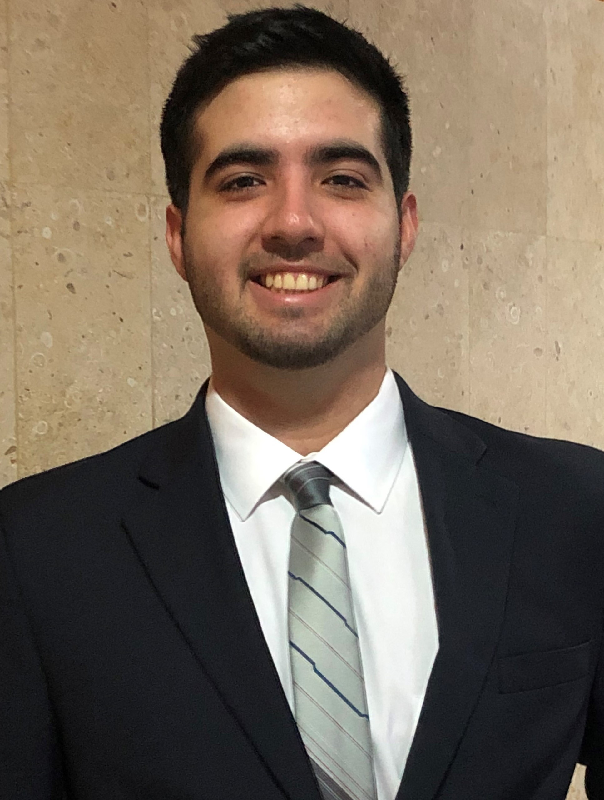

Sergio Alejandro Canto Arizpe
sergiocanto.saisd@gmail.com
Celular +52 1 999-1207-978

Desarrolla un proyecto de pruebas de motricidad con niños utilizando los robots humanoides NAO. Es programador y desarrollador de la interfaz para el uso de los robots por parte de los médicos encargados.
Trabajó como director del área de logística en la celebración, con duración de una semana, de la inauguración del nuevo estadio Borregos del Tecnológico de Monterrey, evento con una asistencia mayor a 20,000 personas.
Dirigió toda la logística, como espacios, planes de contingencia, seguridad, permisos de protección civil, organización de personal y flujo de personas, del evento cultural más grande del Tecnológico de Monterrey con el objetivo de celebrar la diversidad y las diferentes culturas en el campus, con un número de más de 16,000 personas como asistentes al evento.
Organizó eventos como el décimo aniversario de la Carrera para más de 400 estudiantes de la Ingeniería en Sistemas Digitales y Robótica, así como el Gadget Xchange, venta y compra de componentes electrónicos, con duración de 3 semanas.
Enseñó a 250 jóvenes a programar Arduino y utilizar la electrónica, en este servicio Social patrocinado por Google, para desarrollar diferentes proyectos, como robots luchadores de Sumo, líneas transportadoras autónomas y brazos robóticos.
Trabajó en el área de programación y electrónica en toda la semana del reto conducido por el equipo de robótica del ITESM, Roborregos; donde, en equipo, desarrollaron un vehículo todo terreno, controlado vía Bluetooth, con la habilidad de atravesar caminos de piedras, bloques desnivelados y escales con tubos como obstáculos.